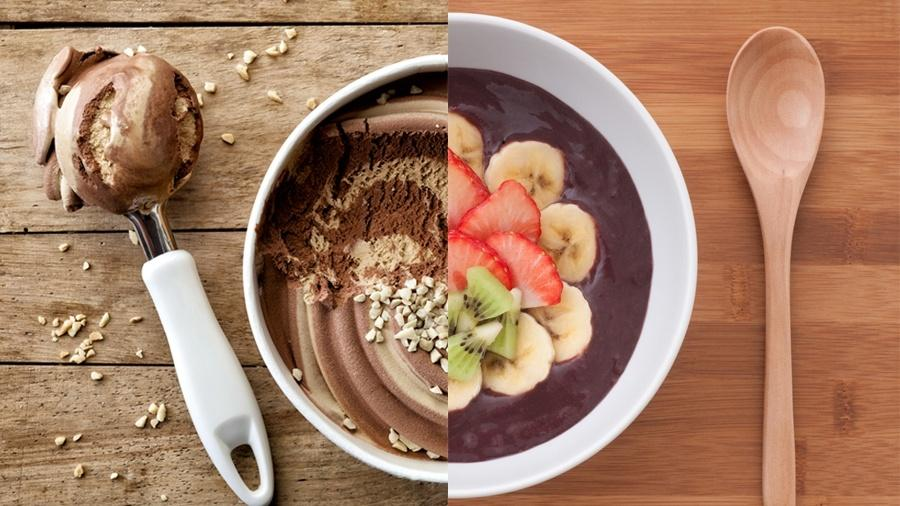
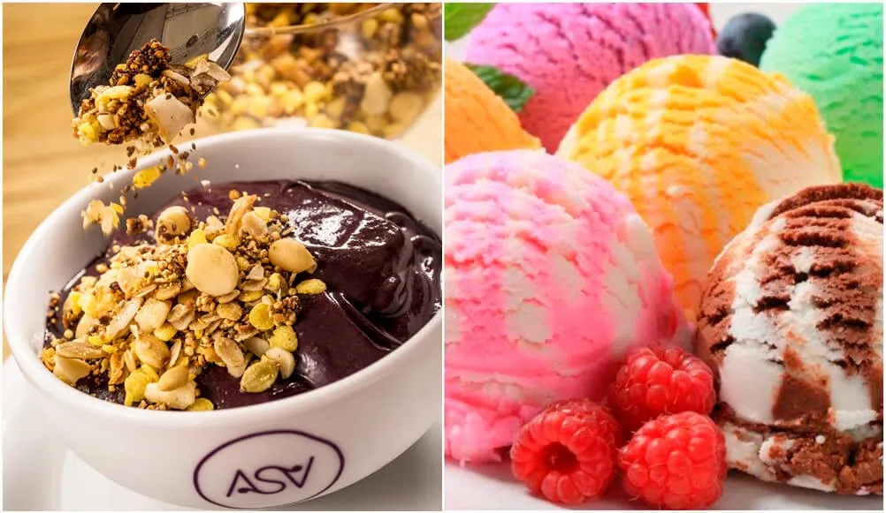

Um dia de calor, eu estava com vontade de tomar algo gelado, mas estava em duvida se comprava açai ou sorvete
acabei pedindo sorvete.
comprei o açai, estava mais caro doque o sorvete, so que era com 1 acompanhamento, fiquei em duvida entre nutella ou morango
escolhi o de flocos com direito a um acompanhamento, e eu estava em duvida entre calda de chocolate e banana.

pedi o mais barato sabor creme, não gostei muito mas acabei matando a vontade
cancelaram o pedido, pois o stabelecimento estava sem nutellam e acabei nao matando minha vontade .
o pedido cehgou rapido, veio com bastante morango e estava muito bom, acabei matando minha vontade.
escolhi a calda de chocolate, estava bom e voce mata sua vontade.